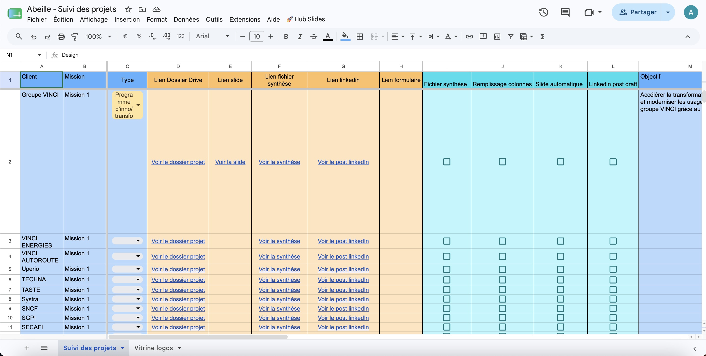
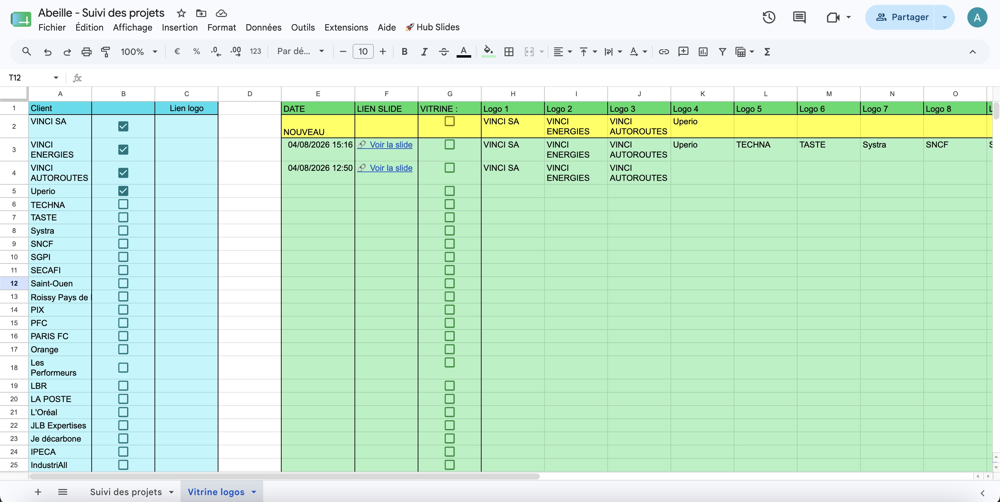
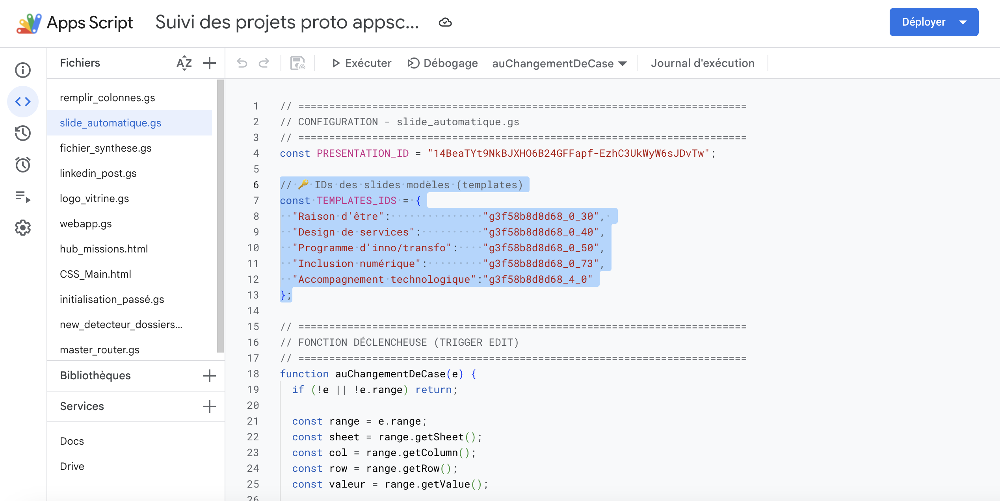

1. Initialisation d'un Nouveau Projet
Dès qu'un nouveau projet démarre, suivez cette procédure simple pour initialiser automatiquement les fichiers et le suivi :
Créer le dossier Drive
Dans le Drive partagé HOC, créez un nouveau dossier au nom de votre projet directement sous le dossier parent 5.2-projets.
Arborescence automatique
Cette création déclenche automatiquement la génération d'un modèle complet de sous-dossiers, ainsi que deux documents Google Docs vierges : Fichier synthèse et Post LinkedIn.
Ajout dans le Suivi
Une nouvelle ligne est ajoutée automatiquement dans le Google Sheet Abeille - Suivi des projets avec le titre de votre projet, le nom du client, et les liens vers les fiches vierges.
Centralisation des infos
Stockez tous les fichiers du projet dans l'arborescence créée tout au long de la mission, en veillant à respecter au mieux les catégories de dossiers.
2. Génération de la Référence Projet
Lorsque le projet est terminé et que vous souhaitez créer la diapositive de référence, rendez-vous sur le Google Sheet Abeille - Suivi des projets et repérez la ligne correspondant à votre projet :

Procédure étape par étape :
Fichier synthèse
Cochez la case Fichier synthèse. Grâce à l'API Gemini (Google AI Studio), l'outil analyse les documents situés dans le dossier du projet (lien en colonne D) pour rédiger une synthèse. Cliquez ensuite sur le lien dans la colonne Fichier synthèse pour la consulter.
Remplissage colonnes
Cochez la case Remplissage colonnes. L'API Gemini extrait les informations clés directement du fichier synthèse généré à l'étape 1 pour compléter automatiquement les cases descriptives du tableau (zone Bleue).
Relecture & Validation
Vérifiez que le Type de projet attribué est correct et contrôlez l'exactitude des données saisies dans les colonnes bleues.
Slide automatique
Une fois les informations validées, cochez la case Slide automatique pour générer la présentation de votre référence projet.
Accès à la Slide
Cliquez sur le lien qui apparaît dans la colonne orange Lien slide pour ouvrir directement la diapositive générée.
Édition & Personnalisation
Ajustez le contenu directement sur la slide : modifiez le texte, affinez la mise en page ou ajoutez des visuels depuis le Google Drive.
Une fois votre diapositive relue et personnalisée, copiez-la puis collez-la dans le Slide Deck officiel des références projets HOC.
3. Rédaction du Brouillon LinkedIn
Déclenchement
Une fois que toutes les colonnes associées au projet contiennent des informations exactes, cochez la case cyan LinkedIn post draft.
Consultation du Brouillon
Cliquez sur le lien généré dans la colonne Lien LinkedIn pour consulter et retravailler le document Google Doc.
Le document est directement accessible via le lien du tableau. Notez qu'il ne se trouve pas dans l'arborescence du dossier projet, mais dans le dossier regroupant tous les contenus LinkedIn :
Drive Partagé HOC > 25. COM 2025-2026 > Textes des postes > Brouillons postes linkedin
4. Création d'une Vitrine Logos
Pour générer une diapositive vitrine regroupant plusieurs logos clients :

Sélectionner les clients
Ouvrez l'onglet Vitrine logos en bas à gauche du Google Sheet. Dans la liste Cyan située à gauche, cochez les clients à ajouter. Leurs noms apparaissent automatiquement à droite sur la ligne jaune NOUVEAU.
Déclencher la slide
Une fois tous les clients cochés, cochez la case VITRINE située sur la ligne jaune pour lancer la création de la présentation.
Ouvrir le lien
Lorsque la slide est créée, un lien apparaît dans la colonne LIEN SLIDE située dans la zone verte juste en-dessous. Cliquez dessus pour visualiser la vitrine.
- Automatique via Logo.dev : Les logos sont recherchés automatiquement sur le Web via l'API Logo.dev. Dès qu'un logo est trouvé pour la première fois, son URL d'image est enregistrée dans la colonne
Lien logo. - Modification manuelle (Remplacement Google Images) : Si Logo.dev récupère un visuel incorrect, vous pouvez remplacer le lien de la colonne
Lien logopar n'importe quelle URL d'image provenant de Google Images. - Mise en mémoire : Ce lien personnalisé sera conservé et réutilisé automatiquement pour toutes les futures générations de vitrines et de slides pour ce client.
- Contrôle visuel obligatoire : Pensez à toujours vérifier si les logos insérés sur la slide sont les bons, car des erreurs de correspondance peuvent parfois se produire via l'API.
- Mise à jour automatique de la liste : Les clients de la liste cyan s'ajoutent automatiquement à chaque fois qu'un nouveau nom de client est détecté dans la feuille Références Projets.
- Ajout manuel : Si vous souhaitez ajouter un client qui n'est pas encore présent dans la feuille des références projets, vous pouvez l'inscrire directement à la main dans la liste cyan.
5. Administration : Ajouter un Nouveau Type de Projet
Si votre projet appartient à une catégorie inédite qui nécessite son propre modèle de présentation, suivez ces étapes pour ajouter ce nouveau type au système :
Menu déroulant Google Sheet
Ouvrez le Google Sheet Suivi des Projets et ajoutez le nouveau type de projet au menu déroulant de la Colonne 3 (Type de projet).
Créer le modèle dans le thème
Ouvrez le Slide Deck des références projets. Cliquez sur Diapositive > Modifier le thème, puis créez un nouveau modèle de disposition (layout) spécifique pour cette nouvelle catégorie.
Structure et balises {{...}}
Ajoutez la nouvelle diapositive modèle dans le deck et insérez des balises au format {{nom_de_variable}} là où vous souhaitez que les données du Google Sheet s'injectent automatiquement.
Mise à jour des Apps Scripts
Accédez aux scripts via Extensions > Apps Script et mettez à jour 3 fichiers (n'oubliez pas de cliquer sur la disquette 💾 pour enregistrer chaque fichier) :
Dans la barre latérale de gauche, ouvrez slide_automatique.gs. En haut du code sous la ligne // 🔑 IDs des slides modèles (templates), ajoutez une nouvelle ligne associant le type de projet à l'ID de sa slide. L'ID de la slide se récupère directement dans l'URL de votre diapositive modèle, juste après slide=id..
Faites un Cmd + F pour rechercher la section // PROMPT GEMINI. Lisez le prompt et ajoutez-y les consignes spécifiques à votre nouveau type de projet là où les autres types sont déjà mentionnés.
Test complet de validation
Créez une ligne de test dans le Google Sheet, sélectionnez votre nouveau type de projet, puis cochez successivement les cases d'action pour vérifier que la synthèse, le remplissage des colonnes et la génération de la slide fonctionnent sans erreur.

Votre nouveau type de projet, ses prompts Gemini et sa diapositive modèle sont désormais totalement configurés et prêts pour la génération automatique.
1. Navigation et Recherche Intelligente
L'interface d'accueil vous offre une vue globale sur toutes les missions enregistrées dans le système :
.png)
Recherche Temps Réel
Saisissez n'importe quel mot-clé, nom de client ou titre dans la barre de recherche centrale pour filtrer instantanément la liste des cartes.
Vues par Filtres
Basculez entre l'affichage par Vue par Types et Vue par Clients pour regrouper vos projets selon vos besoins d'analyse.
Thème d'affichage
Passez du mode sombre au mode clair en utilisant le bouton situé en haut à droite selon votre préférence de lecture.
2. Création de Projet depuis l'Interface
Vous pouvez initialiser un projet directement sans ouvrir le Drive ou le Google Sheet :
.png)
Nom du Client
Tapez le nom du client. Le champ propose une autocomplétion intelligente basée sur les clients existants dans la base.
Champs obligatoires
Saisissez le titre explicite de la mission et choisissez le Type de mission dans la liste déroulante.
Génération globale
Cliquez sur Créer le projet et générer les fichiers. L'outil crée le dossier Drive, les fichiers Docs vierges et la ligne dans le Sheet de façon transparente.
3. Consultation de la Fiche Mission
En cliquant sur n'importe quelle carte de projet depuis l'accueil, une fenêtre modale s'ouvre avec tous les éléments associés :
.png)
Accès Direct aux Documents
Ouvrez directement d'un clic le dossier Drive, la Synthèse, la Slide Google ou le brouillon du Post LinkedIn.
Régénération Automatique
Relancez individuellement la génération IA de la synthèse ou de la slide avec les boutons Régénérer à droite de chaque ligne.
- Utilisez la barre
Rechercher une section...dans la modale pour sauter rapidement aux blocs textuels clés (Contexte, Objectifs, Livrables...).
4. Modification des Contenus du Projet
Modifiez le texte descriptif du projet sans aller toucher aux cellules du Google Sheet :
.png)
Bascule en Mode Édition
Cliquez sur le bouton ✏️ Mode Édition situé au-dessus des sections de texte.
Saisie du contenu
Tous les champs se transforment en zones de saisie textuelles pour vous permettre de retravailler le contexte, les objectifs ou le déroulé.
Enregistrement centralisé
Cliquez sur 💾 Sauvegarder dans Google Sheets pour enregistrer et mettre à jour le Sheet principal.
5. Environnement de Rédaction Plein Écran
Pour travailler sur de longs textes sans distractions visuelles, activez l'affichage étendu :
.png)
En cliquant sur le bouton plein écran ⛶ en haut à droite de la modale :
- Les liens d'en-tête volumineux sont automatiquement masqués pour libérer l'espace vertical.
- Les zones de texte s'agrandissent à 100% de la hauteur disponible.
- Vous pouvez revenir à l'affichage classique à tout moment en recliquant sur l'icône de réduction.